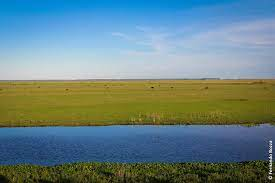

Trabalho de Geografia - Relevo da América Latina
Localizadas principalmente na Argentina, as planícies pampas são vastas áreas de planícies férteis e extensas, ideais para a agricultura e a pecuária. Essa região é conhecida por suas vastas paisagens abertas.
[ ! ] Em sua maior parte, destaca-se o relevo de planícies, constituído de grandes áreas de pastagens que se desenvolvem grandes rebanhos. Assim, a principal atividade econômica do local é a pecuária extensiva com destaque para a criação de bois e ovelhas.
_____